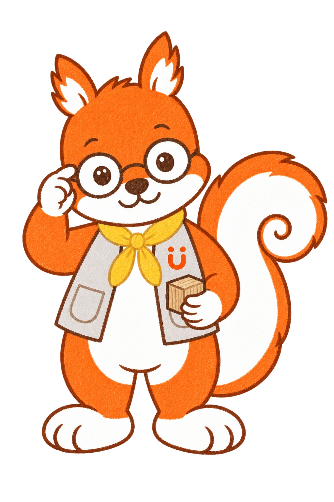
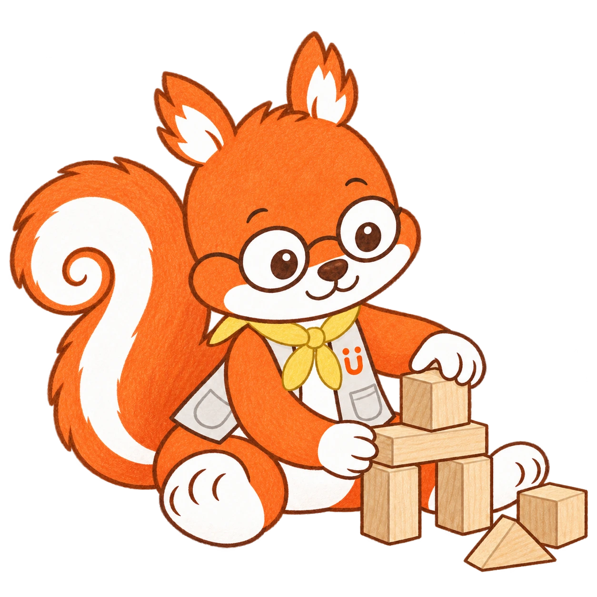

01
なにを つくろうかな。
ひとつ のせて、もうひとつ。
つくるのも、ためすのも、だいすき。
どうしよう。

02
きみが、スプーンに
手を のばした。
ごはんの 時間。
すくおうとすると、お皿が すーっ。
むずかしいかな。

もういちど。……また、すーっ。
きみの 手が、とまった。
03
その手、
よーく 見せてね。
きみが、もういちど
スプーンを ぎゅっ。
ぼくは、その手を 目で追う。
つかれないかな。

04
手だけじゃなくて、
座り方も。
足は、どこに のっているかな。
座っている からだの 様子も。
それから、お皿の まわりも。
すくいにくそう。
05
きみに 合うのは、
どれだろう。
どうかな？

太めの スプーン。浅くて ふちのある お皿。
すべりにくい マット。足の 台も。
きみが 使う 様子を、見てみよう。
06
きみの 手が、
もういちど。
ぼくは、ちょっと 待ってみる。

すくって、ぱくっ。
わあ。ぼくも、うれしい！
きみは また、お皿に 手を のばした。
07
これも、よさそう！
……おっと。
こっちの スプーンも。
この お皿も……。
食べてる ところだった。

ぼく、つい 夢中に なっちゃう。
でも、いまは そのままで。
そっと しまっておこう。
08
べつの日。
服を 着た あとで。
きみが、えりを ひっぱっていた。
ぼくは、そばに しゃがむ。
「そこ、気になる？」
いっしょに 確かめよう。
どうかな。

09
やりやすく。
心地よく。
きる。かく。はく。
きみの「やってみたい」は、いろいろ。

そばで 見たり、ちょっと 支えたり。
きみに 合う 方法を、いっしょに。
おはなしの あとに
その子に合う方法を、一緒に。
Lukeは作業療法士の視点で、道具・姿勢・環境を工夫します。このお話の道具が、どの子にも合うわけではありません。試したあとの様子を見て、その子に合う方法を探します。
握り方や指・手首の動きに加え、持ち続けたときの疲れや、頭・体を支える姿勢も見ます。一場面だけで発達段階や筋力を決めず、その子の食べやすさを確かめます。
できることにも、感触のつらさが隠れていることがあります。やりやすさと心地よさ、どちらも大切にします。
道具を使っても、手伝ってもらっても。「じぶんでやりたい」という気持ちを応援します。
参考：NHS：手指の発達／日本作業療法士協会「子どもの育ちを支える作業療法士」／NHS：食具を使うための支援／NHS：衣服の感触への配慮
HugMap Stories · Lukeの自己紹介